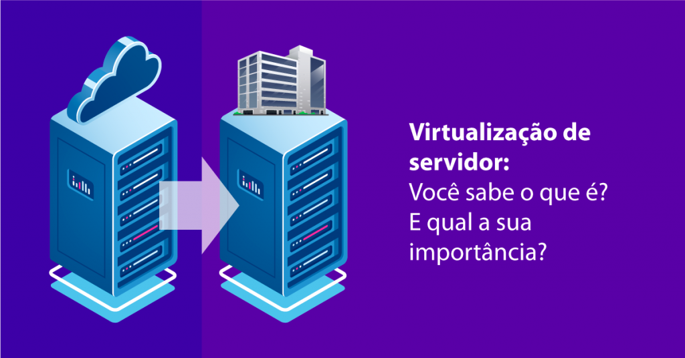

Virtualização
Virtualização é uma tecnologia que permite criar uma máquina virtual em um computador, permite instalar um sistema operacional, desde modo é possível instalar um sistema operacional em Linux dentro de uma máquina Windows, rodar programas e realizar tarefas, é possível ter uma máquina virtual com uma edição mais antiga do Windows, acessar programas do Windows no macOS.
É possível rodar jogos e aplicativos de celular Android direto no PC virtualizando o sistema operacional Android. Também é possível que desenvolvedores testem seus apps direto no PC, sem precisar conectar e compilar código em smartphones.
Segundo o ministério da economia, a virtualização de servidores deu uma economia de 10,5 milhões, iniciativa gerou uma economia de cerca de R$ 10,5 milhões, a aquisição da virtualização economizou em novas compras de hardware tais como memoria, CPU, entre outros. Esse número pode ser ainda maior, devido que o levantamento foi realizado no ano de 2020.
Segundo Elise Gonçalves: “A centralização da aquisição da solução de virtualização possui um significativo potencial de redução, tanto de custos administrativos quanto de valores unitários dos produtos, por meio do potencial ganho de escala em função da quantidade de licenças previstas para 2020”, secretária adjunta da Secretaria Especial de Desburocratização, Gestão e Governo Digital do ME.
“Além disso, haverá redução da replicação de processos licitatórios similares e a padronização dos produtos para órgãos e entidades que possuem as mesmas necessidades.”
Segundo as pesquisas realizadas pelo ministério, a virtualização otimizar os recursos de computação sem a necessidade de investimento em várias componentes físicos. Com a aquisição, os órgãos e entidades poderão utilizar recursos baseados em tecnologia de nuvem de forma confiável e de alto desempenho e obter a migração em tempo real de máquinas virtuais e cargas de trabalho.
Empresas grandes também aderiram a virtualização, NovaDC e Oracle se uniram para fazer a virtualização de servidores. A NovaDC que foi o primeiro Data Center paranaense a fechar parceria com a grande Oracle, conhecida pelo excelente trabalho com banco de dados. Sendo utilizada por 95% das instituições financeiras, a Oracle oferece para as empresas os serviços a paranaenses, através da virtualização dos bancos de dados na infraestrutura de Cloud da NovaDC - uma solução para resolver problemas encontrados nas nuvens públicas para armazenamento de dados, que acabam sendo uma escolha cara e não tão eficiente como a de empresas com clouds próprias.